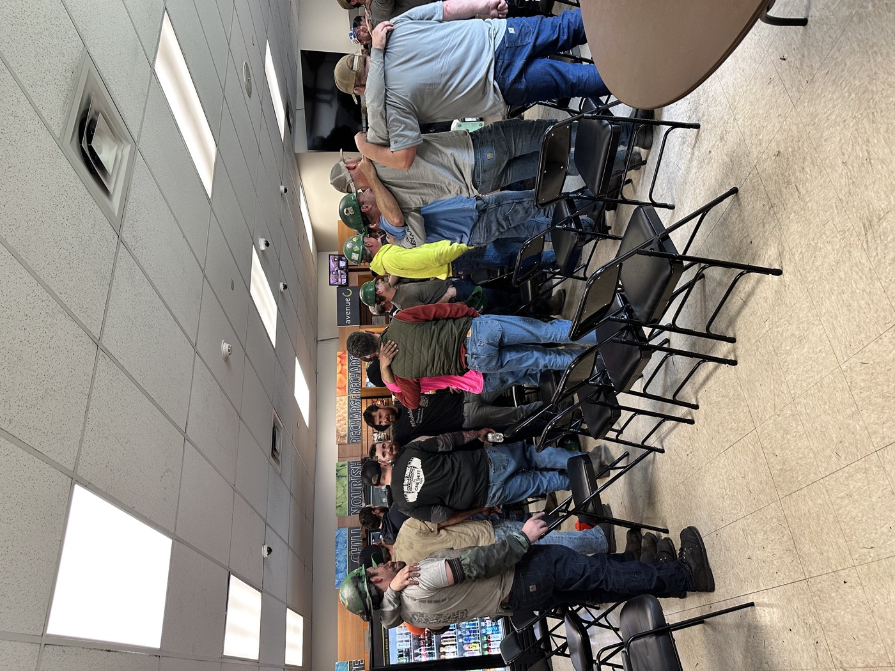
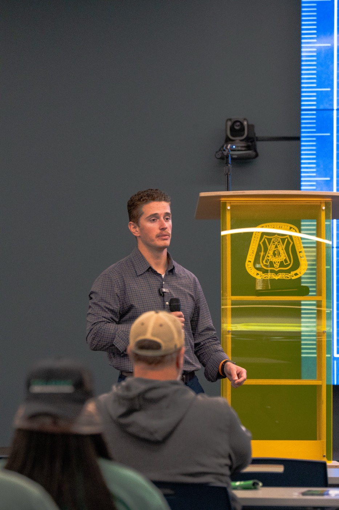

Men who carry a crew need somewhere to put it down.
Construction leadership retreats. A few days, a small group, no stage. Real conversation with other men who understand the weight, led by a clinician who grew up in it.

The foreman is the one nobody checks on.
Superintendents, foremen, owners. They carry the schedule, the safety record, and every guy on the crew. When one of those guys is struggling, it lands on them first. And when they're struggling, it lands on nobody.
A keynote starts the conversation across a company. A retreat is where the men who lead get to have it for themselves. Away from the site, in a room small enough to be honest, with others who've carried the same thing.

Small. Away. Honest.
8 to 12 men
Small enough that everyone talks. Mixed companies or a single leadership team.
Two or three days
Enough time to get past the small talk and the job-site armor. Not so long that it's a week off the schedule.
Off site, in Michigan
Somewhere with room to walk, work with your hands, and sit by a fire.
What the days look like.
No trust falls. No lanyards. Work, conversation, and the tools from Hope in Hard Hats applied to your own life instead of your crew's.
Arrive. Put the phone down.
Evening one is a meal and introductions. Who you are, who you carry, what you're hoping to leave here.
The weight you carry.
Morning: what leadership on a job site actually costs. Afternoon: physical work together, then the hard conversations, practiced with each other instead of theorized.
The plan you take home.
What changes Monday. For your crew, and for you. Each man leaves with specific commitments, and the group stays connected after.
If you've ever said "I'm fine" to your crew, this is for you.
- Foremen, superintendents, and project managers who carry the crew.
- Owners and executives who've lost someone, or nearly did.
- Safety leaders who want mental health to be more than a line item.
- Men who sat through a Hope in Hard Hats talk and thought, "I need more than this."
Companies that book a training program will be invited to send their leaders. Individuals are welcome too.
Be the first to hear dates.
Leave your name and I'll reach out when the first retreat is scheduled. No newsletter, no spam. Just the dates.